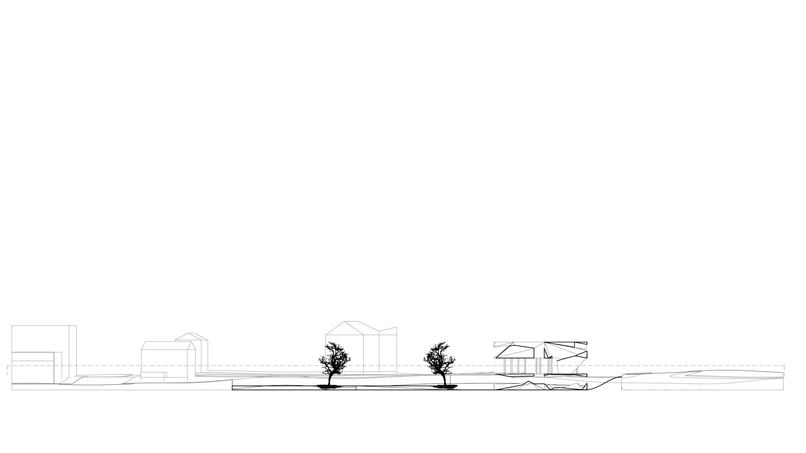

Pavilion "Stack" Design

Derived from my single-level pavilion, this one, still lacking in program, aimed to stack horizontal levels together. What resulted was a very literal stack of cave-like spaces controlled by irregular pyramids and ramps with an ordinary, open space between. The space between is flat, provides unobstructed views of Providence, and is ambiguous in program.

Architectural Design, RISD. Spring 2019.